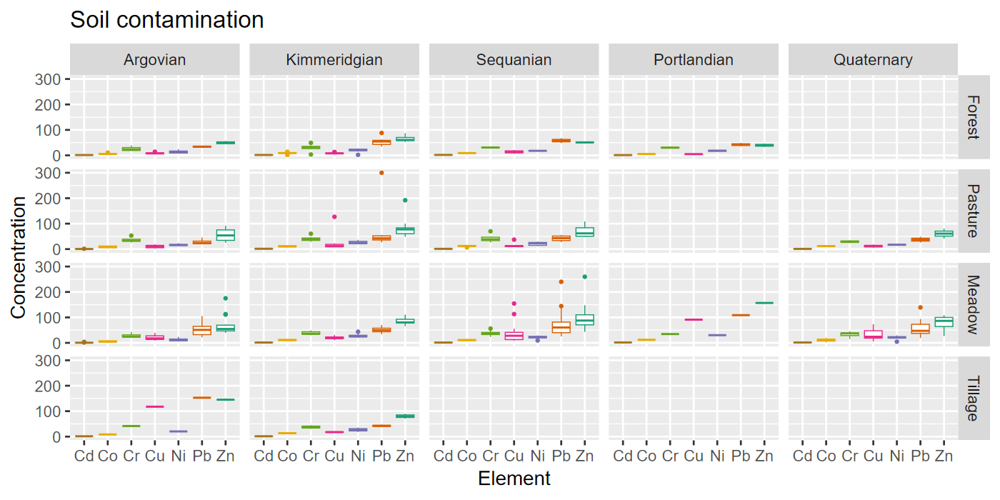
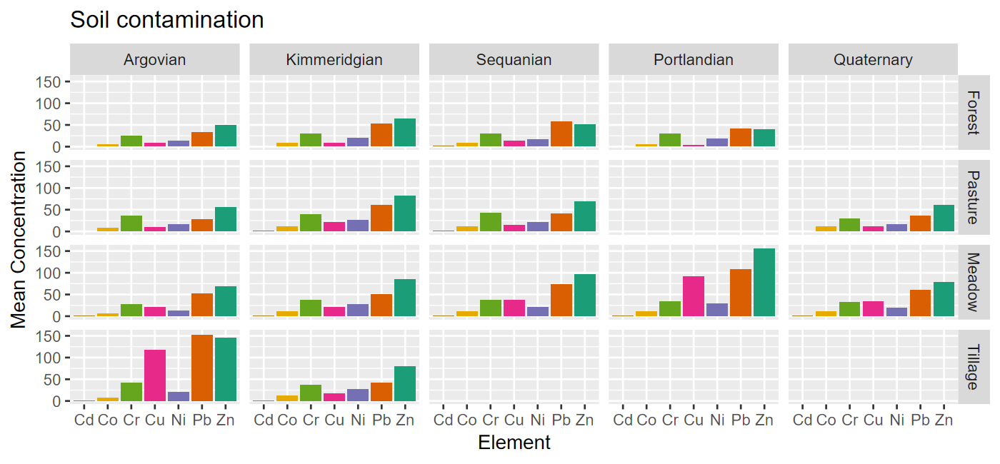

Tidy Data
EES 4891/5891
Probability & Statistics for Geosciences
Jonathan Gilligan
Class #8: Thursday, January 30 2025
Learning Goals
Learning Goals
- Understand the principles of tidy data
- Learn about cleaning and tidying data
- Learn about pivoting data:
- Lengthening data
- Widening data
Tidy Data
Organizing Data in Tables
- There are many ways to organize data in a table
- There is no best way.
- Different questions call for different organization
- Common Principles:
- Each column is a variable
- Each row is an observation
- Each cell is a value


Example
Tuberculosis incidence, reported by World Health Organization
| country | year | cases | population |
|---|---|---|---|
| Afghanistan | 2,000 | 2,666 | 20,595,360 |
| Afghanistan | 2,010 | 12,947 | 28,397,812 |
| Brazil | 2,000 | 80,488 | 174,504,898 |
| Brazil | 2,010 | 70,848 | 195,210,154 |
| China | 2,000 | 213,766 | 1,280,428,583 |
| China | 2,010 | 869,092 | 1,359,821,465 |
| country | year | type | count |
|---|---|---|---|
| Afghanistan | 2,000 | cases | 2,666 |
| Afghanistan | 2,000 | population | 20,595,360 |
| Afghanistan | 2,010 | cases | 12,947 |
| Afghanistan | 2,010 | population | 28,397,812 |
| Brazil | 2,000 | cases | 80,488 |
| Brazil | 2,000 | population | 174,504,898 |
| Brazil | 2,010 | cases | 70,848 |
| Brazil | 2,010 | population | 195,210,154 |
| China | 2,000 | cases | 213,766 |
| China | 2,000 | population | 1,280,428,583 |
| China | 2,010 | cases | 869,092 |
| China | 2,010 | population | 1,359,821,465 |
| country | year | rate |
|---|---|---|
| Afghanistan | 2000 | 12.94 |
| Afghanistan | 2010 | 45.59 |
| Brazil | 2000 | 46.12 |
| Brazil | 2010 | 36.29 |
| China | 2000 | 16.69 |
| China | 2010 | 63.91 |
Rate = cases per 100,000 population.
Tidy Data Principles
- Principles:
- Each column is a variable
- Each row is an observation
- Each cell is a value
- Advantages:
- Consistency makes it easier to do analysis
- You can reuse analysis code and methods
- It’s more efficient for R to work with vectors of data, and that’s how columns are stored
- Consistency makes it easier to do analysis
Digression: R data types
- R has many data types.
- Important categories:
-
Atomic data: one number, character string, etc.
-
3.7,"foo"
-
-
Vectors: multiple atoms, all of the same type:
-
c(3.7, 4.2, 17.6),c("foo", "bar")
-
- Lists: multiple atoms, vectors, or lists, which
can be different types:
-
list(1, 2, "three"),list(c(1, 2, 3), c("one", "two", "three"))
-
- Data frames: are lists of vectors. Each column is a vector.
-
Atomic data: one number, character string, etc.
-
Vectors and lists can have named elements:
-
Indexing contents:
-
vectors:
-
x["height"],y["surname"], orx[1],y[2] x[c("height", "mass")],x[1:3]
-
- lists:
-
z[["sample_id"]]orz[[2]]orz$salinity z[c("sample_id", "pH")]- Single brace
[returns a list, double braces[[and$return a bare element
-
-
vectors:
Vectors, Lists, and Data Frames
- R operates more efficiently on vectors than lists
- Data frames are lists of vectors. Each column is a vector.
-
sum(),mean(),median(),sd()work much faster on vectors,- Getting summary statistics of a column is fast & efficient
-
Jura Data
Jura Data
-
Soil samples from Swiss Jura, with concentrations of contaminants
## Rows: 100 ## Columns: 13 ## $ Xloc <dbl> 2.672, 3.589, 4.010, 2… ## $ Yloc <dbl> 3.558, 4.443, 4.713, 3… ## $ long <dbl> 6.854080, 6.865951, 6.… ## $ lat <dbl> 47.14342, 47.15144, 47… ## $ Landuse <fct> Meadow, Meadow, Pastur… ## $ Rock <fct> Quaternary, Argovian, … ## $ Cd <dbl> 1.570, 2.045, 1.203, 0… ## $ Co <dbl> 8.28, 10.80, 12.00, 10… ## $ Cr <dbl> 37.12, 40.80, 53.20, 2… ## $ Cu <dbl> 18.600, 11.480, 13.040… ## $ Ni <dbl> 18.60, 21.52, 23.92, 1… ## $ Pb <dbl> 38.20, 33.36, 26.56, 2… ## $ Zn <dbl> 65.20, 112.80, 91.60, …
-
Remove columns
XlocandYloc## # A tibble: 100 × 11 ## long lat Landuse Rock Cd Co Cr Cu Ni Pb Zn ## <dbl> <dbl> <fct> <fct> <dbl> <dbl> <dbl> <dbl> <dbl> <dbl> <dbl> ## 1 6.85 47.1 Meadow Quaternary 1.57 8.28 37.1 18.6 18.6 38.2 65.2 ## 2 6.87 47.2 Meadow Argovian 2.04 10.8 40.8 11.5 21.5 33.4 113. ## 3 6.87 47.2 Pasture Argovian 1.20 12 53.2 13.0 23.9 26.6 91.6 ## 4 6.86 47.1 Pasture Quaternary 0.49 10.9 23.4 5.64 14.6 25.9 41.2 ## 5 6.84 47.1 Meadow Sequanian 0.692 8.12 27.2 10.3 14.6 31.2 50.4 ## 6 6.87 47.1 Forest Kimmeridgian 1.75 9.12 35.5 8.36 26.4 37.7 63.2 ## 7 6.85 47.1 Forest Kimmeridgian 0.415 9.12 30.3 4.44 24.2 41 53.2 ## 8 6.87 47.1 Pasture Sequanian 0.685 11.7 31.9 10.9 13.1 30.8 49.3 ## 9 6.85 47.1 Meadow Kimmeridgian 0.92 10.6 49.0 30.3 31.5 68.1 103. ## 10 6.87 47.1 Forest Kimmeridgian 2.12 6.36 23 7.35 14.5 54.4 72.4 ## # ℹ 90 more rows
Cleaning and Wrangling Data
Cleaning and Wrangling Data
- When you get data from someone else, it’s probably not in an easy format to work with.
- Example: Records of monthly CO2 measurements from
Mauna Loa Observatory:
- Begins with 54 lines of comments
- Column names are spread over 3 lines, with names and units.
- Missing values are indicated by
-99.99
"-------------------------------------------------------------------------------------------"
" Atmospheric CO2 concentrations (ppm) derived from in situ air measurements "
" at Mauna Loa, Observatory, Hawaii: Latitude 19.5°N Longitude 155.6°W Elevation 3397m "
" "
" Source: R. F. Keeling, S. J. Walker, S. C. Piper and A. F. Bollenbacher "
" Scripps CO2 Program ( http://scrippsco2.ucsd.edu ) "
" Scripps Institution of Oceanography (SIO) "
" University of California "
" La Jolla, California USA 92093-0244 "
" "
" Status of data and correspondence: "
" "
" These data are subject to revision based on recalibration of standard gases. Questions "
" about the data should be directed to Dr. Ralph Keeling (rkeeling@ucsd.edu), Stephen Walker"
" (sjwalker@ucsd.edu) and Stephen Piper (scpiper@ucsd.edu), Scripps CO2 Program. "
" "
" Baseline data in this file through 03-Aug-2017 from archive dated 04-Aug-2017 14:36:38 "
" "
"-------------------------------------------------------------------------------------------"
" "
" Please cite as: "
" "
" C. D. Keeling, S. C. Piper, R. B. Bacastow, M. Wahlen, T. P. Whorf, M. Heimann, and "
" H. A. Meijer, Exchanges of atmospheric CO2 and 13CO2 with the terrestrial biosphere and "
" oceans from 1978 to 2000. I. Global aspects, SIO Reference Series, No. 01-06, Scripps "
" Institution of Oceanography, San Diego, 88 pages, 2001. "
" "
" If it is necessary to cite a peer-reviewed article, please cite as: "
" "
" C. D. Keeling, S. C. Piper, R. B. Bacastow, M. Wahlen, T. P. Whorf, M. Heimann, and "
" H. A. Meijer, Atmospheric CO2 and 13CO2 exchange with the terrestrial biosphere and "
" oceans from 1978 to 2000: observations and carbon cycle implications, pages 83-113, "
" in "A History of Atmospheric CO2 and its effects on Plants, Animals, and Ecosystems", "
" editors, Ehleringer, J.R., T. E. Cerling, M. D. Dearing, Springer Verlag, "
" New York, 2005. "
" "
"-------------------------------------------------------------------------------------------"
" "
" The data file below contains 10 columns. Columns 1-4 give the dates in several redundant "
" formats. Column 5 below gives monthly Mauna Loa CO2 concentrations in micro-mol CO2 per "
" mole (ppm), reported on the 2008A SIO manometric mole fraction scale. This is the "
" standard version of the data most often sought. The monthly values have been adjusted "
" to 24:00 hours on the 15th of each month. Column 6 gives the same data after a seasonal "
" adjustment to remove the quasi-regular seasonal cycle. The adjustment involves "
" subtracting from the data a 4-harmonic fit with a linear gain factor. Column 7 is a "
" smoothed version of the data generated from a stiff cubic spline function plus 4-harmonic "
" functions with linear gain. Column 8 is the same smoothed version with the seasonal "
" cycle removed. Column 9 is identical to Column 5 except that the missing values from "
" Column 5 have been filled with values from Column 7. Column 10 is identical to Column 6 "
" except missing values have been filled with values from Column 8. Missing values are "
" denoted by -99.99 "
" "
" CO2 concentrations are measured on the '08A' calibration scale "
" "
Yr, Mn, Date, Date, CO2,seasonally, fit, seasonally, CO2, seasonally
, , , , , adjusted, ,adjusted fit, filled,adjusted filled
, , Excel, , [ppm], [ppm] , [ppm], [ppm], [ppm], [ppm]
1958, 01, 21200, 1958.0411, -99.99, -99.99, -99.99, -99.99, -99.99, -99.99
1958, 02, 21231, 1958.1260, -99.99, -99.99, -99.99, -99.99, -99.99, -99.99
1958, 03, 21259, 1958.2027, 315.69, 314.43, 316.19, 314.90, 315.69, 314.43
1958, 04, 21290, 1958.2877, 317.46, 315.15, 317.30, 314.98, 317.46, 315.15
1958, 05, 21320, 1958.3699, 317.51, 314.73, 317.84, 315.06, 317.51, 314.73
1958, 06, 21351, 1958.4548, -99.99, -99.99, 317.23, 315.14, 317.23, 315.14
1958, 07, 21381, 1958.5370, 315.86, 315.18, 315.88, 315.22, 315.86, 315.18
1958, 08, 21412, 1958.6219, 314.93, 316.17, 314.02, 315.29, 314.93, 316.17
1958, 09, 21443, 1958.7068, 313.21, 316.06, 312.48, 315.36, 313.21, 316.06
1958, 10, 21473, 1958.7890, -99.99, -99.99, 312.45, 315.41, 312.45, 315.41
1958, 11, 21504, 1958.8740, 313.33, 315.20, 313.62, 315.47, 313.33, 315.20
1958, 12, 21534, 1958.9562, 314.67, 315.44, 314.76, 315.52, 314.67, 315.44
1959, 01, 21565, 1959.0411, 315.58, 315.56, 315.61, 315.57, 315.58, 315.56GISS Temperature Data
- Example: Records of global temperature anomalies from NASA Goddard
Institute for Space Studies
- Begins with 1 line of comments
- Column names are straigntforward, but each month is a different column, which makes it hard to look at the whole time series.
- Missing values are indicated by
***.
Land-Ocean: Global Means
Year,Jan,Feb,Mar,Apr,May,Jun,Jul,Aug,Sep,Oct,Nov,Dec,J-D,D-N,DJF,MAM,JJA,SON
1880,-.20,-.25,-.09,-.16,-.09,-.22,-.19,-.09,-.15,-.22,-.22,-.19,-.17,***,***,-.11,-.17,-.20
1881,-.20,-.15,.02,.04,.07,-.19,.01,-.04,-.16,-.22,-.18,-.07,-.09,-.10,-.18,.05,-.07,-.19
1882,.16,.14,.05,-.16,-.13,-.22,-.16,-.07,-.14,-.23,-.17,-.36,-.11,-.08,.07,-.08,-.15,-.18
1883,-.29,-.36,-.12,-.18,-.18,-.07,-.07,-.14,-.22,-.11,-.24,-.11,-.18,-.20,-.34,-.16,-.09,-.19
1884,-.13,-.08,-.36,-.40,-.33,-.35,-.31,-.28,-.27,-.25,-.33,-.31,-.28,-.27,-.11,-.37,-.31,-.28
1885,-.58,-.34,-.27,-.42,-.45,-.43,-.33,-.31,-.28,-.23,-.24,-.10,-.33,-.35,-.41,-.38,-.36,-.25
1886,-.44,-.51,-.43,-.28,-.24,-.34,-.18,-.31,-.24,-.28,-.28,-.26,-.31,-.30,-.35,-.32,-.28,-.26
1887,-.72,-.57,-.36,-.35,-.31,-.25,-.26,-.36,-.26,-.36,-.26,-.33,-.36,-.36,-.52,-.34,-.29,-.29Cleaning and Wrangling Data
- A large part of any statistical analysis project is
- Reading the data into R,
- Cleaning the data:
- Managing missing data, identifying and fixing transcription errors, etc.)
- Wrangling the data:
- Transforming the data and organizing it into a convenient form for analysis (Tidying the data)
- We’ll talk about reading data in and cleaning it on Tuesday
- Today, we’re looking at tidying it.
Pivoting Data
- Pivoting is reorganizing data by changing the row-column structure
- Lengthening: Combine several columns into one,
with each column going into a different row.
- Final table has fewer columns and more rows, so it’s longer.
- Widening: Splitting one column into several
columns, with multiple rows from that column being moved into several
columns of a single row.
- Final table has more columns and fewer rows, so it’s wider.
- Lengthening: Combine several columns into one,
with each column going into a different row.
-
Lengthening Data:


Lengthening Data
Lengthening Data
Wide data frame
## # A tibble: 100 × 11
## long lat Landuse Rock Cd Co Cr Cu Ni Pb Zn
## <dbl> <dbl> <fct> <fct> <dbl> <dbl> <dbl> <dbl> <dbl> <dbl> <dbl>
## 1 6.85 47.1 Meadow Quaternary 1.57 8.28 37.1 18.6 18.6 38.2 65.2
## 2 6.87 47.2 Meadow Argovian 2.04 10.8 40.8 11.5 21.5 33.4 113.
## 3 6.87 47.2 Pasture Argovian 1.20 12 53.2 13.0 23.9 26.6 91.6
## 4 6.86 47.1 Pasture Quaternary 0.49 10.9 23.4 5.64 14.6 25.9 41.2
## 5 6.84 47.1 Meadow Sequanian 0.692 8.12 27.2 10.3 14.6 31.2 50.4
## 6 6.87 47.1 Forest Kimmeridgian 1.75 9.12 35.5 8.36 26.4 37.7 63.2
## 7 6.85 47.1 Forest Kimmeridgian 0.415 9.12 30.3 4.44 24.2 41 53.2
## 8 6.87 47.1 Pasture Sequanian 0.685 11.7 31.9 10.9 13.1 30.8 49.3
## 9 6.85 47.1 Meadow Kimmeridgian 0.92 10.6 49.0 30.3 31.5 68.1 103.
## 10 6.87 47.1 Forest Kimmeridgian 2.12 6.36 23 7.35 14.5 54.4 72.4
## # ℹ 90 more rowsLong data frame
## # A tibble: 700 × 6
## long lat Landuse Rock element conc
## <dbl> <dbl> <fct> <fct> <chr> <dbl>
## 1 6.85 47.1 Meadow Quaternary Cd 1.57
## 2 6.85 47.1 Meadow Quaternary Co 8.28
## 3 6.85 47.1 Meadow Quaternary Cr 37.1
## 4 6.85 47.1 Meadow Quaternary Cu 18.6
## 5 6.85 47.1 Meadow Quaternary Ni 18.6
## 6 6.85 47.1 Meadow Quaternary Pb 38.2
## 7 6.85 47.1 Meadow Quaternary Zn 65.2
## 8 6.87 47.2 Meadow Argovian Cd 2.04
## 9 6.87 47.2 Meadow Argovian Co 10.8
## 10 6.87 47.2 Meadow Argovian Cr 40.8
## # ℹ 690 more rowsUsing Long Data

Using Long Data

Lengthening GISTEMP Data
-
Wide format:
## # A tibble: 145 × 19 ## Year Jan Feb Mar Apr May Jun Jul Aug Sep Oct Nov Dec `J-D` `D-N` DJF MAM JJA SON ## <dbl> <dbl> <dbl> <dbl> <dbl> <dbl> <dbl> <dbl> <dbl> <dbl> <dbl> <dbl> <dbl> <dbl> <dbl> <dbl> <dbl> <dbl> <dbl> ## 1 1880 -0.2 -0.25 -0.09 -0.16 -0.09 -0.22 -0.19 -0.09 -0.15 -0.22 -0.22 -0.19 -0.17 NA NA -0.11 -0.17 -0.2 ## 2 1881 -0.2 -0.15 0.02 0.04 0.07 -0.19 0.01 -0.04 -0.16 -0.22 -0.18 -0.07 -0.09 -0.1 -0.18 0.05 -0.07 -0.19 ## 3 1882 0.16 0.14 0.05 -0.16 -0.13 -0.22 -0.16 -0.07 -0.14 -0.23 -0.17 -0.36 -0.11 -0.08 0.07 -0.08 -0.15 -0.18 ## 4 1883 -0.29 -0.36 -0.12 -0.18 -0.18 -0.07 -0.07 -0.14 -0.22 -0.11 -0.24 -0.11 -0.18 -0.2 -0.34 -0.16 -0.09 -0.19 ## 5 1884 -0.13 -0.08 -0.36 -0.4 -0.33 -0.35 -0.31 -0.28 -0.27 -0.25 -0.33 -0.31 -0.28 -0.27 -0.11 -0.37 -0.31 -0.28 ## # ℹ 140 more rows -
Long format:
## # A tibble: 1,740 × 3 ## Year month anomaly ## <dbl> <chr> <dbl> ## 1 1880 Jan -0.2 ## 2 1880 Feb -0.25 ## 3 1880 Mar -0.09 ## 4 1880 Apr -0.16 ## 5 1880 May -0.09 ## 6 1880 Jun -0.22 ## 7 1880 Jul -0.19 ## # ℹ 1,733 more rows
Fancier Lengthening
-
billboarddata set of songs on the Billboard top-100 charts for 2000- 79 columns, with chart position for weeks 1–79 after it entered the top 100.
## # A tibble: 317 × 79 ## artist track date.entered wk1 wk2 wk3 wk4 ## <chr> <chr> <date> <dbl> <dbl> <dbl> <dbl> ## 1 2 Pac Baby… 2000-02-26 87 82 72 77 ## 2 2Ge+her The … 2000-09-02 91 87 92 NA ## 3 3 Doors D… Kryp… 2000-04-08 81 70 68 67 ## 4 3 Doors D… Loser 2000-10-21 76 76 72 69 ## 5 504 Boyz Wobb… 2000-04-15 57 34 25 17 ## 6 98^0 Give… 2000-08-19 51 39 34 26 ## 7 A*Teens Danc… 2000-07-08 97 97 96 95 ## 8 Aaliyah I Do… 2000-01-29 84 62 51 41 ## # ℹ 309 more rows ## # ℹ 72 more variables: wk5 <dbl>, wk6 <dbl>, … - We want to lengthen this to put all the chart positions into one column, and the week in another.
billboard_long <- billboard |>
pivot_longer( cols = starts_with("wk"),
names_to = "week", values_to = "rank")
head(billboard_long)## # A tibble: 6 × 5
## artist track date.entered week rank
## <chr> <chr> <date> <chr> <dbl>
## 1 2 Pac Baby Don't Cry (Keep... 2000-02-26 wk1 87
## 2 2 Pac Baby Don't Cry (Keep... 2000-02-26 wk2 82
## 3 2 Pac Baby Don't Cry (Keep... 2000-02-26 wk3 72
## 4 2 Pac Baby Don't Cry (Keep... 2000-02-26 wk4 77
## 5 2 Pac Baby Don't Cry (Keep... 2000-02-26 wk5 87
## 6 2 Pac Baby Don't Cry (Keep... 2000-02-26 wk6 94## [1] 24092 5billboard_long <- billboard |>
pivot_longer( cols = starts_with("wk"),
names_to = "week", values_to = "rank",
values_drop_na = TRUE)
dim(billboard_long)## [1] 5307 5Lengthening with Multiple Variables
-
who2data on tuberculosis cases- Column names:
<diagnosis>_<sex>_<age group>
## # A tibble: 7,240 × 58 ## country year sp_m_014 sp_m_1524 sp_m_2534 sp_m_3544 ## <chr> <dbl> <dbl> <dbl> <dbl> <dbl> ## 1 Afghan… 1980 NA NA NA NA ## 2 Afghan… 1981 NA NA NA NA ## 3 Afghan… 1982 NA NA NA NA ## 4 Afghan… 1983 NA NA NA NA ## 5 Afghan… 1984 NA NA NA NA ## 6 Afghan… 1985 NA NA NA NA ## 7 Afghan… 1986 NA NA NA NA ## 8 Afghan… 1987 NA NA NA NA ## 9 Afghan… 1988 NA NA NA NA ## 10 Afghan… 1989 NA NA NA NA ## 11 Afghan… 1990 NA NA NA NA ## 12 Afghan… 1991 NA NA NA NA ## 13 Afghan… 1992 NA NA NA NA ## 14 Afghan… 1993 NA NA NA NA ## 15 Afghan… 1994 NA NA NA NA ## 16 Afghan… 1995 NA NA NA NA ## 17 Afghan… 1996 NA NA NA NA ## 18 Afghan… 1997 0 10 6 3 ## # ℹ 7,222 more rows ## # ℹ 52 more variables: sp_m_4554 <dbl>, … - Column names:
who_long <- who2 |>
pivot_longer(cols = !(country:year),
names_to = c("diagnosis", "sex", "age"),
names_sep = "_",
values_to = "count")
print(who_long, n = 15)## # A tibble: 405,440 × 6
## country year diagnosis sex age count
## <chr> <dbl> <chr> <chr> <chr> <dbl>
## 1 Afghanistan 1980 sp m 014 NA
## 2 Afghanistan 1980 sp m 1524 NA
## 3 Afghanistan 1980 sp m 2534 NA
## 4 Afghanistan 1980 sp m 3544 NA
## 5 Afghanistan 1980 sp m 4554 NA
## 6 Afghanistan 1980 sp m 5564 NA
## 7 Afghanistan 1980 sp m 65 NA
## 8 Afghanistan 1980 sp f 014 NA
## 9 Afghanistan 1980 sp f 1524 NA
## 10 Afghanistan 1980 sp f 2534 NA
## 11 Afghanistan 1980 sp f 3544 NA
## 12 Afghanistan 1980 sp f 4554 NA
## 13 Afghanistan 1980 sp f 5564 NA
## 14 Afghanistan 1980 sp f 65 NA
## 15 Afghanistan 1980 sn m 014 NA
## # ℹ 405,425 more rowsWidening Data
Widening Data
- Widening
jura_long
## # A tibble: 700 × 6
## long lat Landuse Rock element conc
## <dbl> <dbl> <fct> <fct> <chr> <dbl>
## 1 6.85 47.1 Meadow Quaternary Cd 1.57
## 2 6.85 47.1 Meadow Quaternary Co 8.28
## 3 6.85 47.1 Meadow Quaternary Cr 37.1
## 4 6.85 47.1 Meadow Quaternary Cu 18.6
## 5 6.85 47.1 Meadow Quaternary Ni 18.6
## 6 6.85 47.1 Meadow Quaternary Pb 38.2
## 7 6.85 47.1 Meadow Quaternary Zn 65.2
## 8 6.87 47.2 Meadow Argovian Cd 2.04
## 9 6.87 47.2 Meadow Argovian Co 10.8
## 10 6.87 47.2 Meadow Argovian Cr 40.8
## 11 6.87 47.2 Meadow Argovian Cu 11.5
## 12 6.87 47.2 Meadow Argovian Ni 21.5
## 13 6.87 47.2 Meadow Argovian Pb 33.4
## 14 6.87 47.2 Meadow Argovian Zn 113.
## 15 6.87 47.2 Pasture Argovian Cd 1.20
## 16 6.87 47.2 Pasture Argovian Co 12
## 17 6.87 47.2 Pasture Argovian Cr 53.2
## 18 6.87 47.2 Pasture Argovian Cu 13.0
## 19 6.87 47.2 Pasture Argovian Ni 23.9
## 20 6.87 47.2 Pasture Argovian Pb 26.6
## 21 6.87 47.2 Pasture Argovian Zn 91.6
## 22 6.86 47.1 Pasture Quaternary Cd 0.49
## 23 6.86 47.1 Pasture Quaternary Co 10.9
## # ℹ 677 more rowsjura_sum <- jura_long |>
summarize(conc = mean(conc, na.rm = TRUE),
.by = c("Landuse", "Rock"))
head(jura_sum)## # A tibble: 6 × 3
## Landuse Rock conc
## <fct> <fct> <dbl>
## 1 Meadow Quaternary 34.2
## 2 Meadow Argovian 27.2
## 3 Pasture Argovian 22.5
## 4 Pasture Quaternary 24.1
## 5 Meadow Sequanian 40.0
## 6 Forest Kimmeridgian 26.7## # A tibble: 5 × 5
## Rock Meadow Pasture Forest Tillage
## <fct> <dbl> <dbl> <dbl> <dbl>
## 1 Quaternary 34.2 24.1 NA NA
## 2 Argovian 27.2 22.5 20.0 69.6
## 3 Sequanian 40.0 29.2 25.9 NA
## 4 Kimmeridgian 33.5 34.5 26.7 31.3
## 5 Portlandian 62.2 NA 20.1 NA